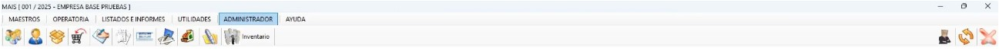
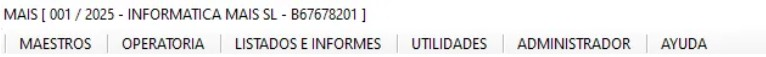
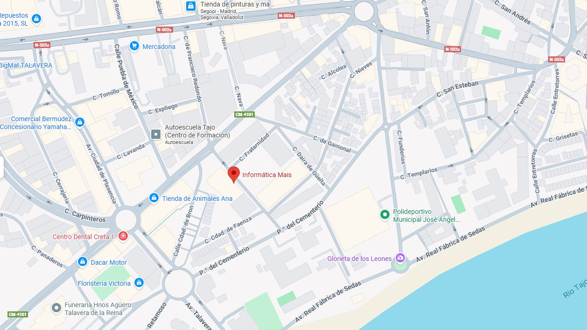

🖥️ 1. Cómo entrar en nuestro MAIS
🏠 2. Inicio del MAIS
Al entrar al sistema verás una barra de tareas superior.
🧭 (EXPLICADO DE IZQUIERDA A DERECHA)
En la barra de tareas encontrarás los siguientes botones principales:
🔘 3.Botones de texto
En varias secciones del MAIS encontrarás botones de texto para realizar acciones específicas.
En la parte superior, justo encima de los iconos, tenemos varios botones de texto que ofrecen funciones más avanzadas.
👥 4.Contacto
📞 Contacto para soporte: MAIS – 925 722 232
✉️ Correo electrónico: correo@mais.es
🔗 Enlaces útiles
🎯 4. Cómo hacer un cierre (¡rumbo a 2026!)
✨ Reflexión del año 2025 y apertura de nuevas metas para 2026 ✨
🎥 Ver Cierre MAIS 2026